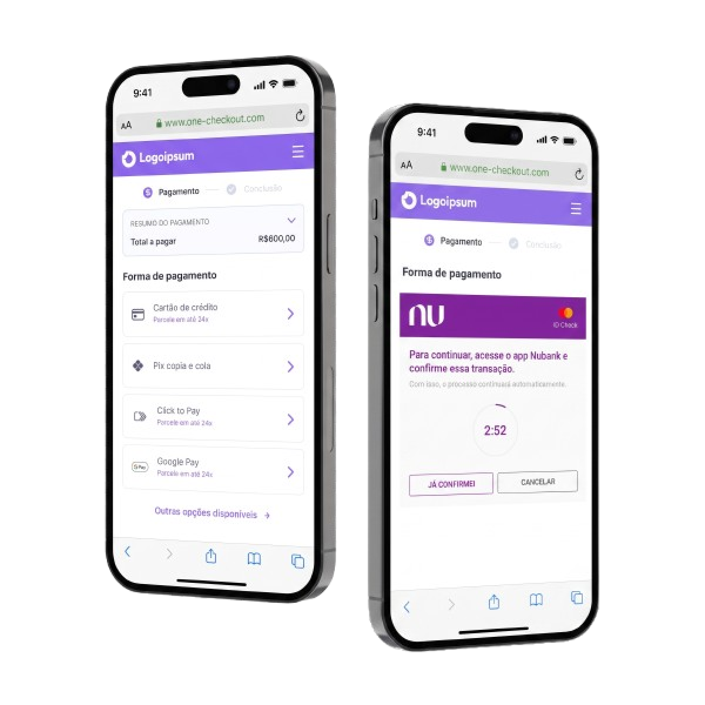

Case · Product Design Leadership · Pagamentos B2B2C white-label
Smart Checkout
Como liderei UX em uma plataforma white-label de pagamentos com orquestração inteligente, múltiplos canais, métodos e regras configuráveis, organizando complexidade técnica e de negócio em uma experiência mais clara, confiável e escalável.

Meu papel
Lead Product Designer e referência técnica de UX, responsável pela experiência do Smart Checkout e do POS, sob o mesmo guarda-chuva de pagamentos.
- Canais
- Web · iFrame · SDK · POS físico / Totem
- Time envolvido
- Liderei um time de 4 designers sendo 2 PDs 1 sênior e 1 pleno e 1 visual designer e 1 content designer. Eu direcionava, aprovava e revisava todas as entregas.
Contexto
O Smart Checkout era uma plataforma white-label de pagamentos com orquestração inteligente e regras configuráveis, atendendo múltiplas indústrias com necessidades e comportamentos de pagamento muito diferentes entre si.
Objetivo do projeto
Oferecer o meio de pagamento certo para cada contexto: cartão de crédito, débito, boleto, Pix (copia e cola, biometria, automático), Nupay, carteiras digitais e Click to Pay. O trabalho não era só interface, era converter, entendendo qual meio fazia sentido para cada situação de cobrança e cada indústria.
A dor do usuário
Confiar. Sair de um ambiente familiar, onde a pessoa já tinha feito login, para uma tela de pagamento com identidade só parcialmente customizada, justamente no momento mais sensível da jornada.
A dor do negócio
A maioria dos parceiros não tinha estrutura de pagamento digital. O Smart Checkout não era uma feature a mais, era transformação digital completa, que também exigia educar o consumidor final.
Por que esse problema existia
Cedo ou tarde, todo negócio precisaria digitalizar pagamentos. A Bemobi se posicionou como essa ponte. Cada adaptação da plataforma precisava responder a uma pergunta central antes de virar tela:
Essa decisão atende só a um pedido específico ou fortalece a plataforma para os próximos parceiros, canais e indústrias?
A experiência precisava funcionar em standalone, iFrame e SDK nativo (iOS e Android), além do POS físico, usado em cobrança porta a porta, escolas, faculdades e totens.
Pesquisa
Sem acesso direto ao usuário final, já que os consumidores pertenciam aos parceiros, a pesquisa se concentrou em dois eixos.
Benchmark de mercado
Stripe, Ebanx, Mercado Pago e Stone. A Stripe seguiu como referência mais próxima do Smart Checkout, pela mesma lógica de múltiplos canais e métodos em escala.
Persona sintética por indústria
Dado de consumo real por indústria orientava a construção de personas sintéticas, com apoio do Gemini, usadas para guiar decisões de solução por parceiro.
Objetivos do negócio vs. objetivos do usuário
Quando a hipótese não bateu com a realidade
A expectativa era que tickets altos gerassem mais parcelamento. Na prática, foi o oposto: mensalidade escolar concentrava mais pagamento à vista, e contas de água ou luz, mais parcelamento. O comportamento não era proporcional ao valor, e sim à natureza financeira de cada indústria.
Quando o negócio aceitou perder para sustentar o parceiro e o usuário
Um parceiro exigiu Pix Automático, mesmo sabendo que o método não era vantajoso para a receita da empresa, diferente do cartão parcelado. A decisão foi seguir assim mesmo: a relação com o parceiro e a simplicidade de recorrência para o usuário pesaram mais que a maximização de receita no curto prazo.
Soluções encontradas
a) Processo de solução
Da evolução incremental à plataforma escalável
Mapear o sistema
Entender indústrias, canais, métodos, regras, integrações, riscos e comportamentos antes de propor interface.
Organizar a arquitetura de informação
Definir como métodos, parcelas, estados, validações, recorrência e fallback deveriam aparecer sem sobrecarregar a jornada.
Transformar exceções em padrões
Separar pedidos pontuais de oportunidades reais de plataforma, preservando consistência e flexibilidade.
Usar dados para decidir
Analisar conversão, erros, adoção de métodos, canais, parcelamento, gravações e funis para tirar decisões do campo da opinião.
Escalar qualidade com Design System
Criar componentes, padrões e critérios para aproximar web, iFrame e SDK sem ignorar a lógica própria de cada canal.
b) Decisões com racional exposto
Arquitetura para múltiplos métodos e canais
Web e iFrame seguiam uma experiência one-page. O SDK, construído depois, era nativo e paginado, apostando em uma jornada mais faseada e imersiva.
Testamos a hipótese com parceiros que implementaram os dois canais ao mesmo tempo, eliminando viés de público já acostumado. O resultado foi o oposto do esperado: o Web convertia mais, mesmo com o SDK entregando uma experiência mais moderna.
A decisão foi preservar a lógica de cada canal, sem forçar a mesma interface em todos eles.
- Pix, cartões, wallets, boleto, recorrência e combinações exigiam fluxos, estados e mensagens diferentes.
- Algumas opções dependiam de dispositivo, sistema operacional, canal ou elegibilidade.
- Consistência significava preservar a lógica de decisão, sem repetir a mesma interface em todos os lugares.
Regras configuráveis com critério de produto
O checkout permitia customização por parceiro, canal, produto, perfil, dispositivo e estratégia comercial. Meu papel era decidir o que virava padrão de plataforma e o que comprometia consistência ou escala.
- Ordem dos métodos, seções exibidas, slots de parcelas e parcela recomendada podiam variar.
- Wallets e métodos específicos dependiam de contexto técnico, como sistema operacional e disponibilidade.
Exemplo · Negociação com parceiro
Em uma negociação, a solicitação era destacar a opção de pagamento em 1x. Como isso poderia afetar o share de transações parceladas, propus manter as três recomendações planejadas e adicionar a opção de 1x como uma quarta escolha inicial. A solução preservou a estratégia comercial, atendeu ao parceiro e evitou comprometer a experiência de escolha.
Clareza em validações, segurança e fallback
A plataforma tinha antifraude interno, 3D Secure, zero dollar, ID Check e autenticações externas. Em alguns erros, a mensagem precisava orientar sem revelar detalhes que abrissem brechas de segurança ou violassem a LGPD.
- 3D Secure levava o usuário para autenticação no ambiente do banco emissor.
- Zero dollar validava o cartão antes da seleção de parcelas.
- Erros de cartão precisavam orientar sem mencionar fraude de forma explícita.
- Pix era o principal fallback em falhas de cartão.
- Falhas em Pix biometria ou wallets direcionavam para alternativas mais viáveis.
Escala por Design System, dados e IA
O Celeste não era só uma biblioteca visual, funcionava como camada de decisão para componentes, estados, documentação e handoff com engenharia. Também apoiava outras frentes de pagamento, como faturas e POS.
- Componentes como inputs, botões, cards, bottom sheets, modais, estados de erro, loading e seleção de parcelas eram críticos para o checkout.
- Storybook aproximava Figma e implementação.
- PostHog, gravações de sessão e IA ajudavam a investigar comportamento e sustentar decisões.
- Dashboards traziam visão quantitativa. Gravações ajudavam a entender o contexto por trás dos números.
A IA não decidia por mim, acelerava a análise.
Resultados observados
O principal resultado foi consolidar o Smart Checkout como uma plataforma mais preparada para escalar entre indústrias, canais e métodos.
Em uma janela de 6 meses, a taxa de avanço de payment request para tentativa de pagamento cresceu cerca de 2 pontos percentuais ao mês, mesmo com a entrada de novos parceiros.
Produto
- Plataforma preparada para múltiplas indústrias, canais e métodos.
- Arquitetura mais clara para métodos complexos e regras configuráveis.
- Melhor tratamento de erro, fallback e retentativa.
Time
- UX mais presente em roadmap, OKRs e decisões estratégicas.
- Designers mais próximos de dados, funis, gravações e métricas.
- Design review com critérios mais claros de qualidade, acessibilidade e consistência.
Sistema
- Celeste trouxe consistência entre produtos e canais.
- Storybook aproximou Figma, design review e engenharia.
- Customizações passaram a ter critérios mais claros de produto e escala.
Aprendizados / Fechamento
Em produtos financeiros, simplicidade não significa ausência de complexidade. Significa organizar a complexidade para que o usuário decida com clareza e confiança.
Quatro anos nessa solução me deram uma visão de mercado de pagamentos que dificilmente eu teria em outro contexto. Foi menos como um único produto e mais como cinco desafios diferentes ao mesmo tempo: cada indústria trazia sua própria jornada, sua própria lógica de inadimplência e seu próprio comportamento de pagador.
Se pudesse revisitar uma decisão, seria aproximar mais cedo as interfaces do Web e do SDK. O SDK, mesmo convertendo menos, seguia esteticamente mais forte e recebia mais investimento em feature nova, o que reforçava o argumento de não refazer o front do zero. A decisão foi evoluir o SDK até ele converter tanto quanto o Web. Ainda não sei se foi a certa.